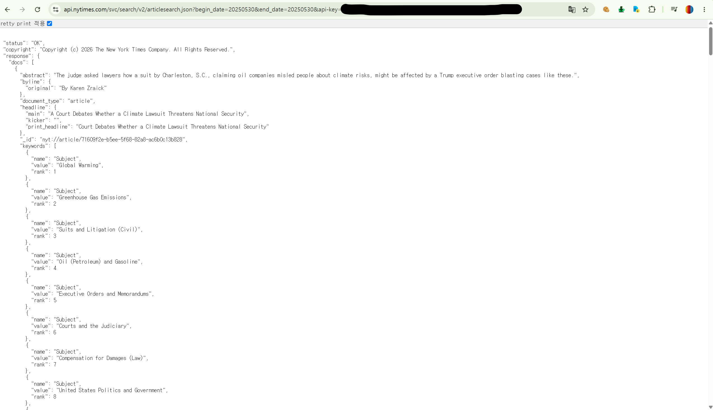
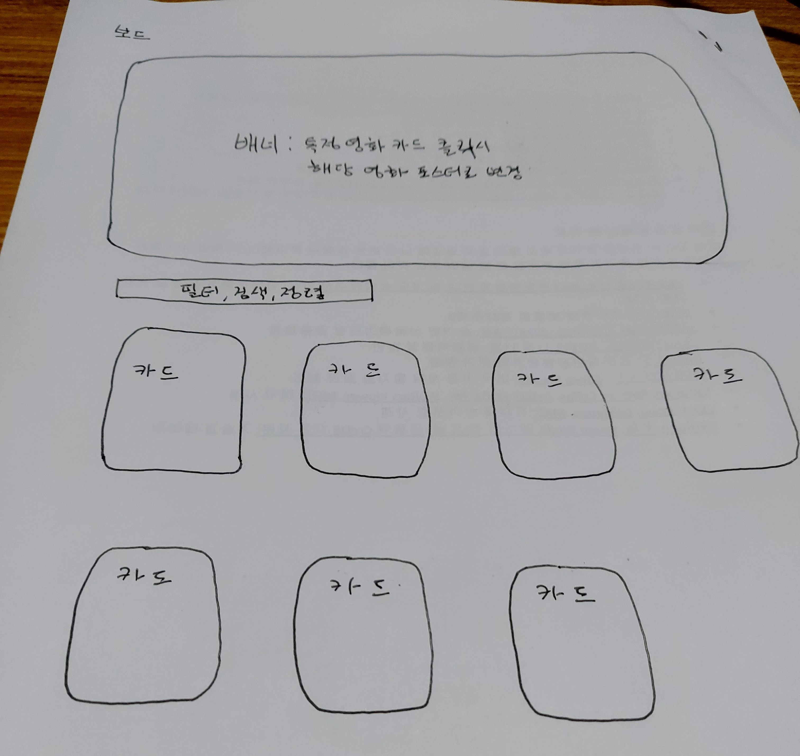
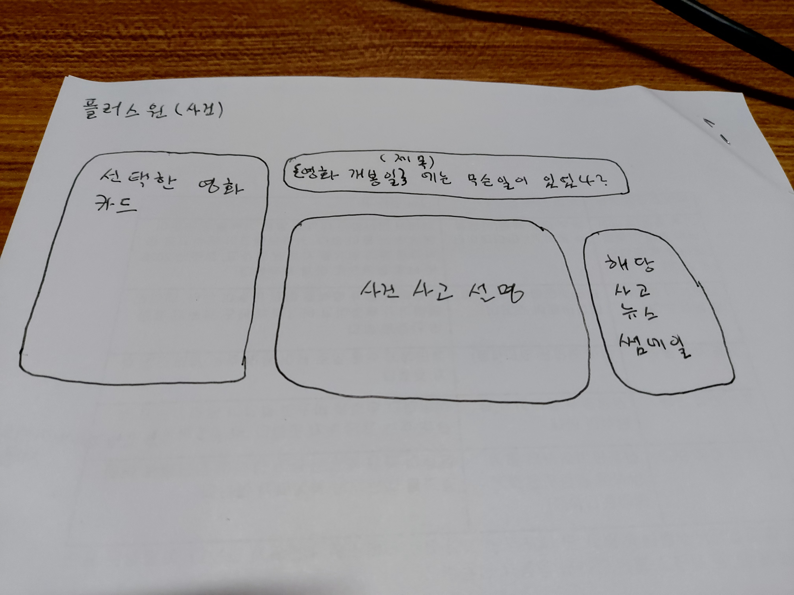

1. 이름, GitHub 아이디, 사이트 이름
- 이름 : 박현빈
- GitHub 아이디 : binbin-ai
- 사이트 이름 : 영화 개봉일 사건사고
2. 누구를 위한 사이트인가
한줄 : 영화 소개와 더불어 영화 개봉일을 기준으로 해당 일시에 전세계에서 어떤 사건사고가 발생하였는지 소개해주는 사이트 입니다.
- 보드 : 웹 사이트 개발자가 추천하는 영화 목록 카드, 제목 검색, 장르/정렬 기능, 찜하기
- 상세 : 영화 제목, 개봉일, 장르, 제작국가, 해당년도
- 사건 : 선택 영화 개봉일 기준 사건사고, 제목, 설명, 썸네일
3. 플러스원 페이지 : 그날의 타임머신(개봉일 기준 뉴스)
한 줄 소개 : 선택한 영화의 개봉 날짜를 기준으로 당시 전 세계에서 일어났던 주요 뉴스와 사건을 함께 보여 줍니다.
| 이름 | 제공기관 | 대표 요청 주소 | 키 이름 | 키 발급 상태 |
|---|---|---|---|---|
| Article Search API | The New York Times | https://api.nytimes.com/svc/search/v2/articlesearch.json?begin_date=YYYYMMDD&end_date=YYYYMMDD&api-key=KEY | NYT_KEY | 받음 |
4. 주소창 호출 결과 캡처

5. 화면 스케치 (보드, 플러스원)


6. 퍼뜨릴 계획과 받고 싶은 페이지
- 왜? : 영화에 대한 정보도 얻고 해당 영화가 개봉한 날짜에 발생한 사건에 대한 정보도 얻고 일석이조, 또 만약 개봉날짜에 영화의 주제와 비슷한 사건사고가 발생했다면 흥미 상승
- 타겟? : 영화를 추천받고 싶은사람, 영화와 어떤 사건을 연관짓고 싶은사람, 여러 사건사고를 알고싶은데 단순 검색으로 알아보는것은 지루한 사람
- 받고 싶은 페이지 : 영화에 맞는 간식 레시피 찾기
7. 13~15주차 일정과 위험, 대안
- 13주차 : 기존 영화 보드를 더 색다르게 변경할수 있는 방법 고안 및 제작
- 14주차 : 해당 아이디어(사건사고)보다 더 이색 아이디어 고안, 아이디어에 맞는 API 탐색, API 반환값을 활용한 페이지 제작
- 15주차 : 디자인 다듬기, 에러/예외 처리, 발표/li>
- 위험 : NYTimes 무료 API는 분당 5회 호출 제한이 있어 여러 영화 카드를 빠르게 누르면 오류가 날 수 있음
- 대안 : 한 번 불러온 날짜의 기사 결과는 브라우저 localStorage에 저장해 두고 재사용하며, 오류 시 안내 문구를 표시함